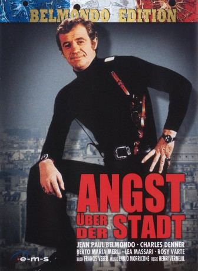
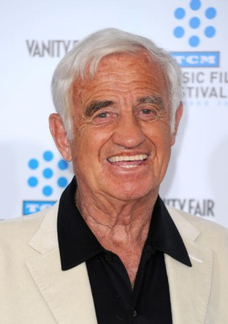
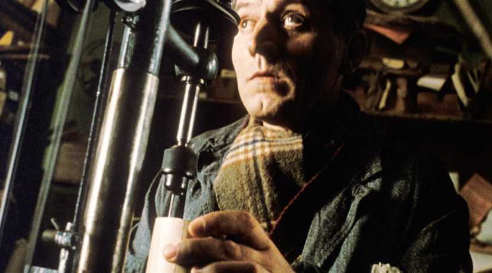

#10749 Angst über der Stadt
Alternativ: The Night Caller (Englischer Titel)
 
 IMDB-Wertung: 7.0 / 10
IMDB-Wertung: 7.0 / 10  Metascore: 0
Metascore: 0 
Ein psychopathischer Frauenmörder hält Paris in Atem. In Briefen an die Polizei und die Presse erklärt "Minos", wie der Mann sich nennt, dass er die Stadt von der "Sünde" befreien will. Er töte Frauen, die in seinen Augen ein verwerfliches Leben führen. Obwohl Kommissar Letellier noch mit dem Fall des Bankräubers Marcucci beschäftigt ist, der ihm nach einer spektakulären Verfolgungsjagd entkam, betraut man ihn mit der Fahndung nach "Minos".
Jahr: 1975
Dauer: 114 Minuten
FSK: 16
Land: Frankreich Studio: Constantin VideoTonspuren:
Untertitel:
Auflösung: 720p (1280x720) Größe: 6819 MB
Genre: Action, Thriller, Drama
Regisseur: Henri Verneuil
Drehbuch: Jean Laborde, Francis Veber, Henri Verneuil, Henri Verneuil
Soundtrack: Ennio Morricone
Darsteller:
-  Jean-Paul Belmondo als Le commissaire Jean Letellier
- Charles Denner als L'inspecteur Moissac
- Jean Martin als Le commissaire divisionnaire, Sabin
- Jacques Paoli als Himself / Lui-même
- Jean-François Balmer als Julien Dallas
- Lea Massari als Nora Elmer
- Albert Delpy als (uncredited)
-  Jacques Mathou als (uncredited)
- Adalberto Maria Merli als Pierre Valdeck / Minos
- Rosy Varte als Germaine Doizon
- Roland Dubillard als Le psychologue
- Catherine Morin als Hélène Grammont
- Germana Carnacina als Pamela Sweet
- Giovanni Cianfriglia als Marcucci
- Henry Djanik als Un inspecteur de police
- Louis Samier als
- Jean-Louis Fortuit als
- Gilberte Géniat als
- Philippe Brigaud als
- Roger Riffard als
- Georges Riquier als Le préfet
- Jean-Louis Le Goff als
- Maurice Vallier als L'invité qui se trompe de porte
- Maurice Auzel als Un inspecteur
- Henri-Jacques Huet als Cortes, l'amant de Nora
- Jacques Rispal als Cacahuète
- Michel Berreur als Un braqueur (uncredited)
- Pierre Douglas als Un journaliste radio (uncredited)
- André Valardy als Un radio-reporter (uncredited)
Datei: X:\1975\Angst über der Stadt (1975, FSK16, 1280x720).mkv seit 22.02.2019
Festplatte: HD 1971-1979
 Es gibt insgesamt 27 Filme in der Gruppe '1975'
Es gibt insgesamt 27 Filme in der Gruppe '1975'